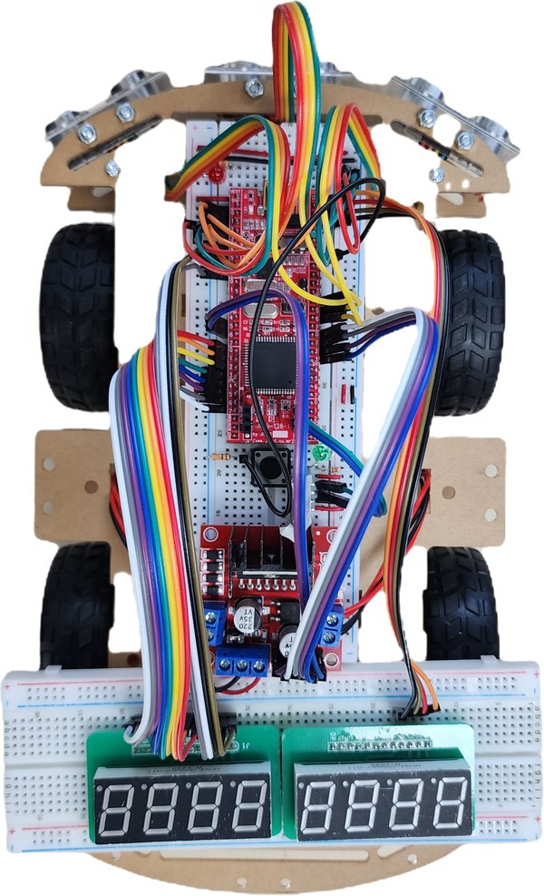

2026.06 · 개인
초음파 자율주행 자동차
초음파 센서 자동 주행과 블루투스 수동 주행을 갖춘 RC카
1. 프로젝트 개요
- 프로젝트명
- 초음파 자율주행 자동차
- 수행기간
- 2026.06.22 ~ 2026.06.25
- 수행인원
- 개인
- 담당역할
- 전체 (하드웨어 배선, 펌웨어)
- 사용 기술
- C, ATmega128A, L298N, HC-SR04 × 3, HC-06(Bluetooth), FND
- 링크
- GitHub
2. 개발 배경 및 목적
- 교육 과정 ATmega128A 개인 과제
- 타이머·PWM·외부 인터럽트·UART를 함께 사용하는 제어 학습
3. 개발 목표
- 초음파 센서 3개 기반 장애물 회피 자동 주행
- 블루투스 명령 기반 수동 주행
- 버튼으로 주행 모드 전환
4. 주요 구현 내용
- 모터: Timer1 Fast PWM으로 좌우 바퀴 속도 개별 제어 (L298N)
- 초음파: 세 센서를 60ms 간격으로 순차 측정해 간섭 방지, 외부 인터럽트와 Timer3로 Echo 폭 측정
- 자동 주행: 전방 근접 시 넓은 쪽으로 회전, 좌우 거리 차이에 비례한 PWM 보정, 세 방향 차단 시 정지
- 수동 주행: 블루투스 문자 명령
F/B/L/R/S - FND에 주행 시간·회전 횟수 표시
5. 문제 해결
5.1 버튼 미동작
- 문제
- 모드 전환 버튼 미동작
- 초기 판단
- 코드 오류로 판단해 하루 가까이 코드만 검토
- 원인 확인
- 오실로스코프로 신호 측정 결과, 버튼 회로 결선 오류
- 해결
- 결선 수정
6. 결과
- 자동 주행(장애물 회피)과 블루투스 수동 주행 시연


7. 느낀 점
- 소프트웨어 문제로 보이던 오동작이 결선 문제였던 경험을 통해, 코드 검토와 함께 실제 신호를 측정해 확인해야 한다는 점